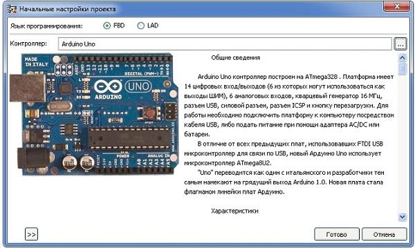

FLProg візуальне програмування для Arduino
Сторінку створено за матеріалами сайту - https://flprog.ru
 Програма FLProg дозволяє створювати прошивки для плат Arduino за допомогою графічних мов FBD і LAD, які є стандартом в області програмування промислових контролерів. Програма дає можливість працювати з функціональними блоками, що відповідають за роботу із зовнішніми пристроями. Вони є «обгортками» над бібліотеками, призначеними для роботи з ними. Програма працює на комп'ютері під керуванням OS Windows, Linux-32 і Linux-64. При створенні нового проекту вам запропонують вибрати мову програмування, на якому ви будете створювати проект, і контролер, на якому цей проект буде реалізований. Проект в FLProg являє собою набір плат, на кожній з яких зібраний закінчений модуль загальної схеми.
Для зручності роботи кожна плата має найменування і коментарі. Так само кожну плату можна згорнути (для економії місця в робочій зоні, коли робота над нею закінчена) і розгорнути. Червоний індикатор в найменуванні плати вказує на те, що в схемі плати є помилки. Після завершення роботи над проектом проводиться його компіляція. Після компіляції автоматично відкриється програма «Arduino 1.5.7» з завантаженим скетчем вашого проекту. У програмі «Arduino IDE 1.5.7» вам необхідно буде вказати номер COM порту, до якого підключений ваш контролер, вибрати його тип, і зробити заливку скетчу в контролер. Детальніше про програму «Arduino IDE 1.5.7» можна почитати на сайті Arduino.cc.